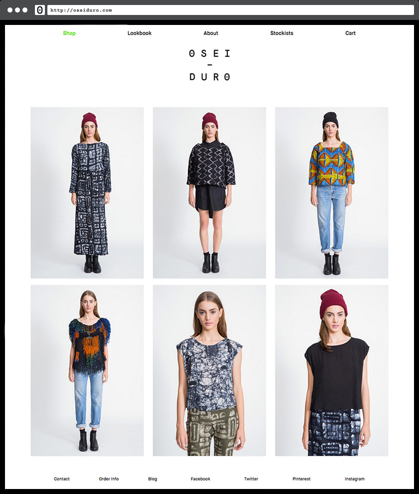

Osei-Duro Clothing
Two sites on different platforms merged into one. By focusing on the important stuff, a Los Angeles clothing producer realizes economy of scope and a simplified aesthetic.
In 2013 Osei-Duro was managing both WordPress and Big Cartel sites to show and sell their collections. After an initial consultation it became clear that maintaining two sites was more trouble than it was worth, and the decision was made to combine them into one. While both platforms offered certain advantages, Big Cartel won as the platform of choice because the owners were familiar with the interface and were pleased with how it facilitated online sales.
The site needed to be sleek and minimal - accessible and visually consistent across multiple platforms.

The landing page can be switched between a gallery of rotating images or product groups according to demands of the season.
Sizing info and purchase buttons are big and bold to help minimize product returns, and sharing buttons allow users to post to social media without leaving the product-purchasing channel.
In the shop, related products are suggested according to the most recently selected item.

And mobile users are accommodated for as equally as desktop — all products have tap-hovers and image gallery swipes.

The checkout page is clear and simple and returns the customer to the homepage once a secure transaction is complete.
Conclusion
For the needs of Osei-Duro, going with Big Cartel was a positive decision, significantly reducing time spent on site maintenance. Visually, the site is pulled together by identity and art direction by Full-Time Part-Time Studio. Still doing its thing, the site was a featured in a 2014 Big Cartel email blast and blog post that was sent to all Big Cartel shop owners and subscribers.